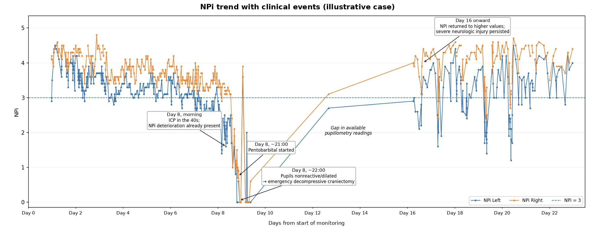
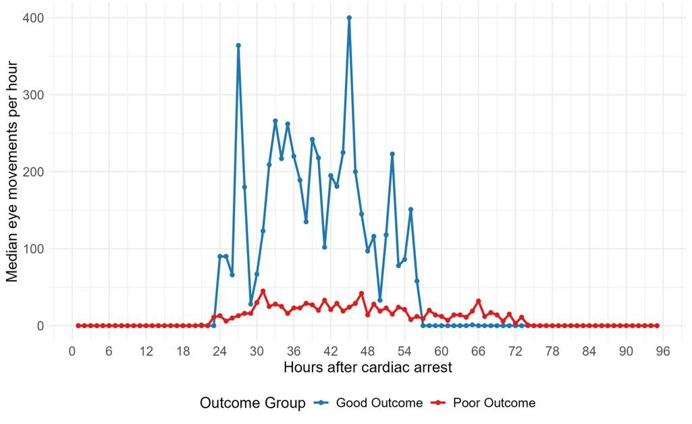
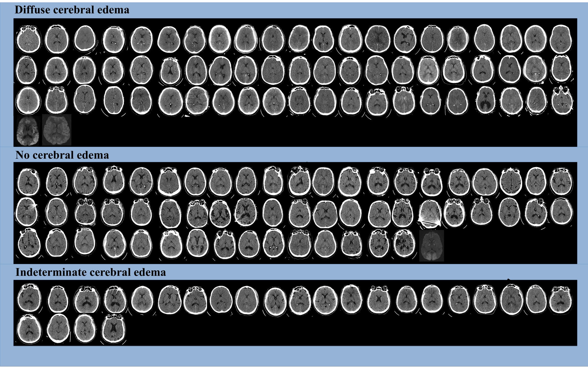
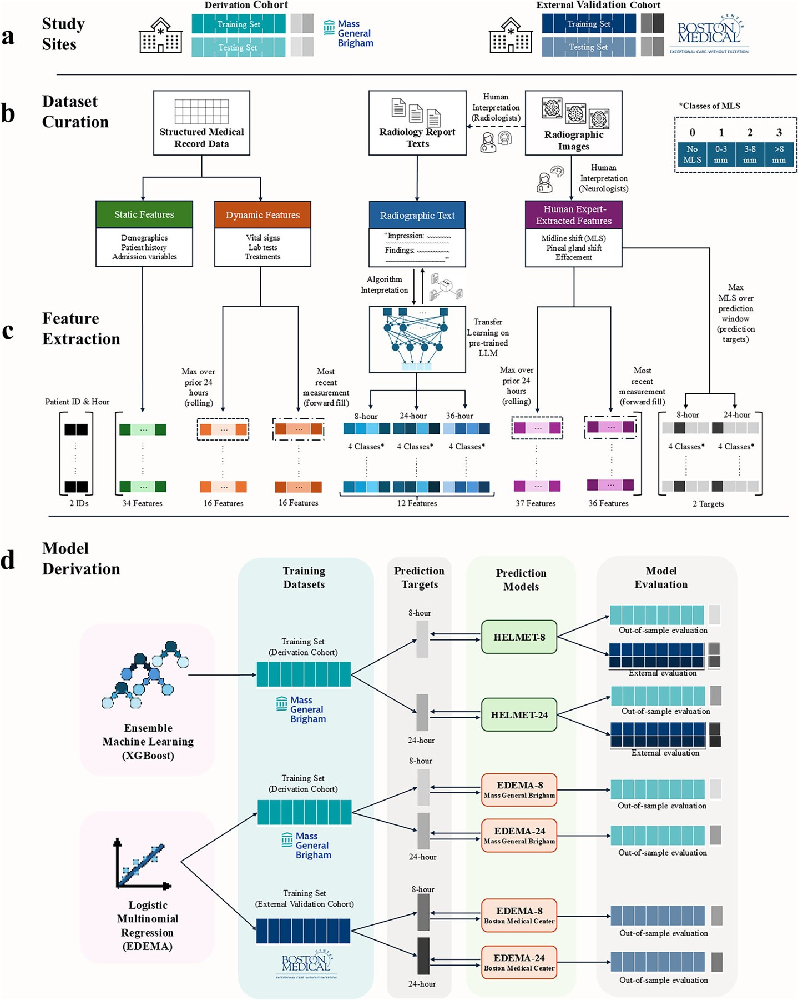
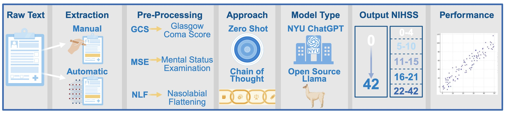
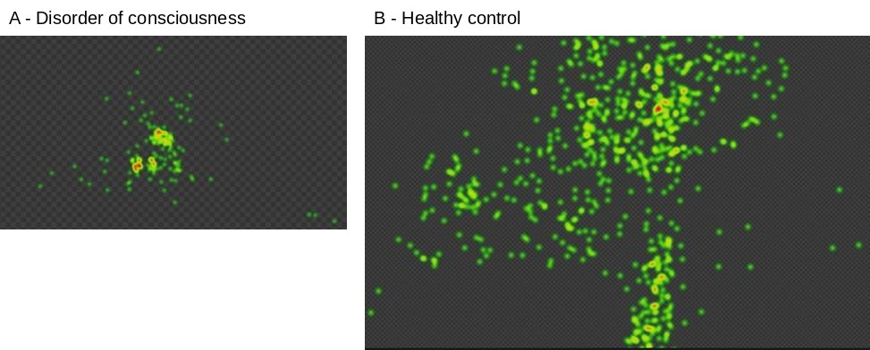
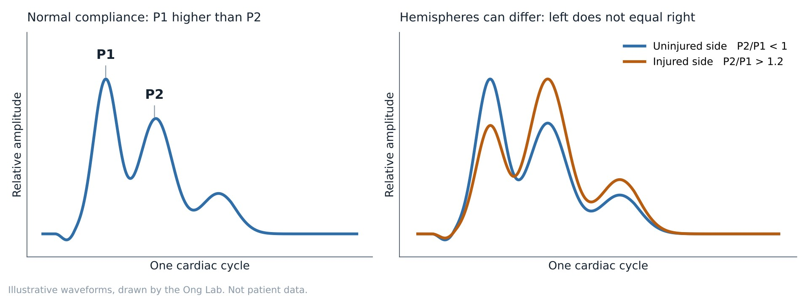
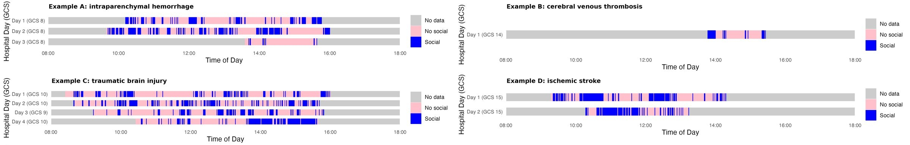

Research
From signal to decision
We capture physiologic data at the bedside, build models that turn it into early warnings and individualized predictions of recovery, and test whether those predictions can improve care.
Quantitative pupillometry
Pupils as an early warning
The penlight pupil exam is subjective. Automated pupillometers give a reproducible score, the Neurological Pupil index (NPi). We have shown that NPi declines in the hours before neurologic deterioration after large hemispheric stroke, that combining it with CSF volumetrics on routine CT improves prediction, and that pupil abnormalities add prognostic information in traumatic brain injury.
Key papers
- Du Y, Pohlmann JE, Chatzidakis S, et al., Ong CJ. Quantitative pupillometry predicts neurologic deterioration in patients with large middle cerebral artery stroke. Annals of Neurology. 2025.PubMed
- Du Y, Mallinger LA, Reinert AL, et al., Dhar R, Ong CJ. Integrating brain imaging volumetrics and quantitative pupillometry for predicting neurologic deterioration after large hemispheric stroke. Neurocritical Care. 2026.PubMed
- Veerapaneni D, Sakthiyendran NA, Kim SY, et al., Ong CJ. Pupil abnormality frequency in the first 72 hours improves IMPACT score in traumatic brain injury. Critical Care Explorations. 2025.PubMed
- Prescott BR, Saglam H, Duskin J, et al., Ong CJ. Anisocoria and poor pupil reactivity by quantitative pupillometry in patients with intracranial pathology. Critical Care Medicine. 2022.

Eye movements and EEG
Predicting recovery after cardiac arrest
Many patients resuscitated from cardiac arrest remain comatose, and families face decisions about life-sustaining treatment within days. Current tools mostly identify who will do poorly. We developed the first machine learning algorithm to detect eye movements from electrooculography (EOG), and we use it with EEG to track each patient's own trajectory of arousal and recovery. In our data, patients who go on to a good outcome show far more eye movements in the first days after arrest.
Key papers
- Stafford RA, Srivastava V, Altaf AZ, et al., Ong CJ. Automated cerebral edema detection using electroencephalography in post-cardiac arrest patients. Neurocritical Care. In press.
- Hill CJ, Sykora CA, Schmugge S, et al., Ong CJ. Eye movement detection using electrooculography and machine learning in cardiac arrest patients. Resuscitation. 2025.
- Dupre AE, Cronin MFM, Schmugge S, et al., Ong CJ. A machine learning eye movement detection algorithm using electrooculography. Sleep. 2022.PubMed
- Ong CJ, Dhand A, Diringer MN. Early withdrawal decision making in patients with coma after cardiac arrest: a qualitative study of intensive care clinicians. Neurocritical Care. 2016.PubMed


Machine learning and language models
Forecasting cerebral edema with AI
Swelling after large hemispheric stroke can become life-threatening within hours. Our EDEMA score is widely used to predict it, and HELMET, built with collaborators at Oxford, now forecasts midline shift over the next 8 and 24 hours by combining health record data, imaging measurements and large language model reading of radiology reports. We also use large language models to extract the NIH Stroke Scale from free-text notes.
Key papers
- Phillips E, O'Donoghue O, Zhang Y, et al., Ong CJ, Orfanoudaki A. HELMET: a hybrid machine learning framework for real-time prediction of edema trajectory in large middle cerebral artery stroke. npj Digital Medicine. 2025.DOI
- Song JJ, Stafford RA, Pohlmann JE, et al., Ong CJ. Later midline shift is associated with better post-hospitalization discharge status after large middle cerebral artery stroke. Scientific Reports. 2025.PubMed
- Ong CJ, Huang Q, Kim I, et al., Trinquart L. Association of dynamic trajectories of time-series data and life-threatening mass effect in large middle cerebral artery stroke. Neurocritical Care. 2024.PMC
- Ong CJ, Gluckstein JA, Laurido-Soto O, et al. Enhanced detection of edema in malignant anterior circulation stroke (EDEMA) score: a risk prediction tool. Stroke. 2017.PMC


Eye tracking, Brain4Care and SocialBit
New bedside sensors in acute brain injury
Patients with disorders of consciousness may have meaningful eye movements that are invisible at the bedside. We record gaze, fixation and pupil size with research eye-tracking glasses, and pair it with EOG, which can run continuously for days. Brain4Care is an FDA-cleared scalp sensor that records an intracranial pressure waveform without surgery; in our Neuro ICU pilot, the ratio of its two main peaks often differed between hemispheres after ischemic stroke and hemorrhage. SocialBit is a wearable that measures how often patients are in conversation, without recording what is said, to test whether social interaction in the ICU relates to recovery.
Key presentations
- Left does not equal right: interhemispheric P2/P1 differences on noninvasive brain monitoring. Neurocritical Care Society Annual Meeting, 2025.
- Passive measurement of social interaction in critically ill neurologic patients using a wearable sensing platform: a feasibility study. Neurocritical Care Society Annual Meeting, 2026.


